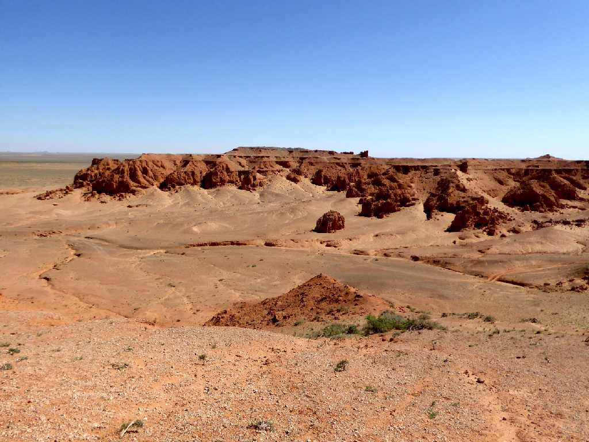
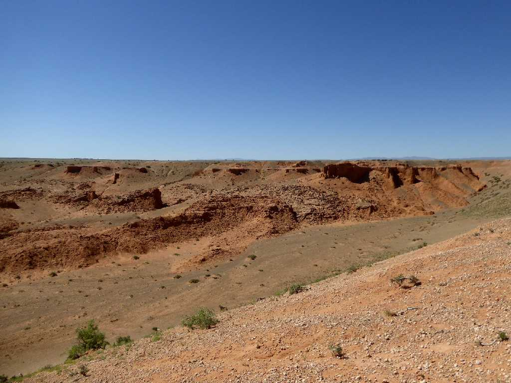
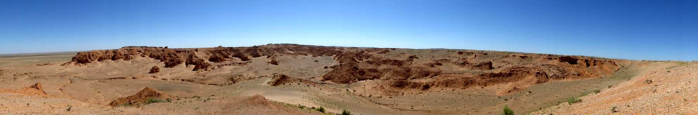
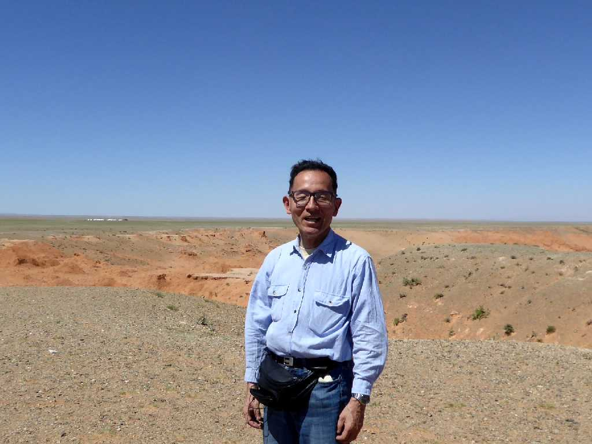
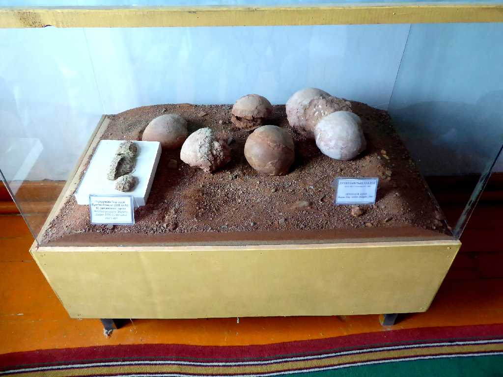
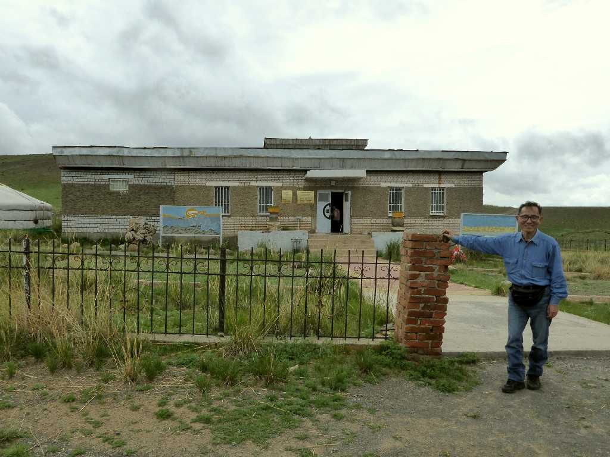

Bayanzag Flaming Cliffs Umno Gobi
炎の絶景と云われ赤い砂岩が美しい燃える崖バヤンザグ

Bayanzag Flaming Cliffs
恐竜の卵の化石が１９２２年に初めて発見されたところで恐竜が卵により繁殖していたことが明らかとなった

Bayanzag Flaming Cliffs

July 3 2017 Bayanzag

Fossil of dinosaur eggs Nature Museum Umno Gobi
恐竜の卵の化石

July 2 2017 Nature Museum